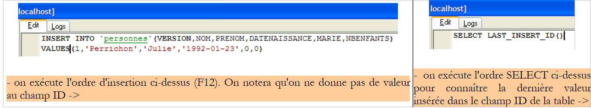
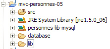
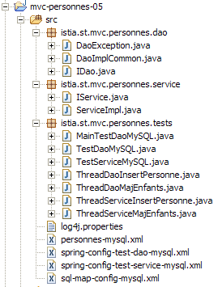
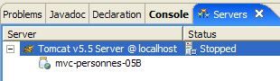
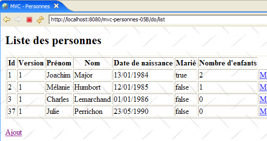

19. 三层架构中的 MVC Web 应用程序 – 示例 5，MySQL
19.1. MySQL 数据库
在此版本中，我们将把人员列表存储在 MySQL 4.x 数据库表中。 我们使用了可在 [http://www.easyphp.org] 获取的 [Apache – MySQL – PHP] 软件包。下文中的屏幕截图均来自 MySQL Manager Lite 客户端 [http://www.sqlmanager.net/fr/products/mysql/manager]，这是一个用于 MySQL 数据库管理系统（DBMS）的免费管理客户端。
该数据库命名为 [dbpersonnes]。其中包含一个名为 [PERSONNES] 的表：

[PERSONNES] 表将存储由 Web 应用程序管理的人员列表。该表是通过以下 SQL 语句创建的：
MySQL 4.x 的功能似乎不如前两个数据库管理系统。我无法向该表添加约束（检查）。
- 第 10 行：该表必须为 [InnoDB] 类型，而非 [MyISAM]，因为后者不支持事务。
- 第 2 行：主键类型为 auto_increment。如果插入行时未指定表的 ID 列值，MySQL 将自动为该列生成一个整数。这将使我们无需手动生成主键。
[PERSONNES] 表可能包含以下内容：

我们知道，当通过 [DAO] 层插入 [Person] 对象时，该对象的 [id] 字段在插入前等于 -1，插入后则为 -1 以外的值；该值即为插入到 [PERSONNES] 表的新行所分配的主键。让我们通过一个示例来看看如何确定该值。
 |
 |
SQL语句
可让我们确定表中 ID 字段插入的最后一个值。该语句必须在插入操作之后执行。这与 [Firebird] 和 [Postgres] 数据库管理系统不同，在后者中，我们是在插入之前就请求了新增人员的primary key值。我们将在 [people-mysql.xml] 文件中使用它，该文件包含在数据库上执行的 SQL 语句。
19.2. 用于 [DAO] 和 [service] 层的 Eclipse 项目
为了使用 MySQL 数据库开发应用程序的 [dao] 和 [service] 层，我们将使用以下 Eclipse 项目 [mvc-personnes-05]：

该项目是一个简单的 Java 项目，而非 Tomcat Web 项目。
[src] 目录
该文件夹包含 [dao] 和 [service] 层的源代码，以及这两个层的配置文件：

所有名称中包含 [mysql] 的文件，其 Firebird 和 Postgres 版本可能已进行修改，也可能未作修改。下面我们将介绍那些已进行修改的文件。
[database] 文件夹
该文件夹包含用于为用户创建 MySQL 数据库的脚本：

文件夹 [lib]
该目录包含应用程序所需的文件：
 |
请注意 MySQL 数据库管理系统（DBMS）的 JDBC 驱动程序。所有这些文件均属于 Eclipse 项目的类路径。
19.3. [dao] 层
[dao] 层如下所示：

我们仅展示与 [Firebird] 版本相比的变更。
映射文件 [person-mysql.xml] 如下所示：
<?xml version="1.0" encoding="UTF-8" ?>
<!DOCTYPE sqlMap
PUBLIC "-//iBATIS.com//DTD SQL Map 2.0//EN"
"http://www.ibatis.com/dtd/sql-map-2.dtd">
<sqlMap>
<!-- alias class [Person] -->
<typeAlias alias="Personne.classe"
type="istia.st.mvc.personnes.entites.Personne"/>
<!-- mapping table [PERSONNES] - object [Person] -->
<resultMap id="Personne.map"
class="istia.st.mvc.personnes.entites.Personne">
<result property="id" column="ID" />
<result property="version" column="VERSION" />
<result property="nom" column="NOM"/>
<result property="prenom" column="PRENOM"/>
<result property="dateNaissance" column="DATENAISSANCE"/>
<result property="marie" column="MARIE"/>
<result property="nbEnfants" column="NBENFANTS"/>
</resultMap>
<!-- list of all persons -->
<select id="Personne.getAll" resultMap="Personne.map" > select ID, VERSION, NOM,
PRENOM, DATENAISSANCE, MARIE, NBENFANTS FROM PERSONNES</select>
<!-- get a specific person -->
<select id="Personne.getOne" resultMap="Personne.map" >select ID, VERSION, NOM,
PRENOM, DATENAISSANCE, MARIE, NBENFANTS FROM PERSONNES WHERE ID=#value#</select>
<!-- add a person -->
<insert id="Personne.insertOne" parameterClass="Personne.classe">
insert into
PERSONNES(VERSION, NOM, PRENOM, DATENAISSANCE, MARIE, NBENFANTS)
VALUES(#version#, #nom#, #prenom#, #dateNaissance#, #marie#,
#nbEnfants#)
<selectKey keyProperty="id">
select LAST_INSERT_ID() as value
</selectKey>
</insert>
<!-- update a person -->
<update id="Personne.updateOne" parameterClass="Personne.classe"> update
PERSONNES set VERSION=#version#+1, NOM=#nom#, PRENOM=#prenom#, DATENAISSANCE=#dateNaissance#,
MARIE=#marie#, NBENFANTS=#nbEnfants# WHERE ID=#id# and
VERSION=#version#</update>
<!-- delete a person -->
<delete id="Personne.deleteOne" parameterClass="int"> delete FROM PERSONNES WHERE
ID=#value# </delete>
<!-- obtain the value of the primary key [id] of the last person inserted -->
<select id="Personne.getNextId" resultClass="int">select
LAST_INSERT_ID()</select>
</sqlMap>
这与 [people-firebird.xml] 的内容相同，仅有以下细微差异：
- 第 29–37 行中的 SQL 语句 "Person.insertOne" 已发生变更：
- SQL插入语句在SELECT语句之前执行，而SELECT语句用于检索已插入行主键的值
- SQL 插入语句中未为 [PERSONNES] 表的 ID 列指定值
这与我们在第 19.1 节中讨论的插入示例一致。
请注意，这可能成为并发线程之间问题的潜在根源。设想两个线程 Th1 和 Th2 同时执行插入操作。总共有四条 SQL 语句需要执行。假设它们按以下顺序执行：
- Th1 执行插入 I1
- Th2 执行 insert I2
- Th1 执行 select S1
- select S2 由 Th2 执行
在步骤 3 中，Th1 检索了上次插入时生成的主键，该主键属于 Th2 而非其自身。 我不确定 iBATIS 的 [insert] 方法是否能防范这种情况。我们将假设它能正确处理此问题。如果并非如此，我们需要将 [dao] 层中的实现类 [DaoImplCommon] 派生为类 [DaoImplMySQL]，并在其中对 [insertPersonne] 方法进行同步。这仅能解决我们应用程序中线程的问题。 如果在上例中，Th1 和 Th2 来自两个不同的应用程序，则需要通过事务以及事务之间的适当隔离级别来解决该问题。此时，[serializable] 级别（事务执行时仿佛是顺序运行的）是合适的。
请注意，Firebird 和 Postgres 数据库管理系统不存在此问题，因为它们会在执行 INSERT 之前先执行 SELECT。例如，考虑以下操作序列：
- select S1 from Th1
- SELECT S2 from Th2
- insert I1 from Th1
- insert I2 from Th2
在步骤 1 和 2 中，Th1 和 Th2 从同一个生成器中检索主键值。此操作通常是原子性的，Th1 和 Th2 将检索到两个不同的值。如果该操作不是原子性的，且 Th1 和 Th2 检索到了两个相同的值，那么 Th2 在步骤 4 中执行的插入操作将因主键重复而失败。这是一个完全可恢复的错误，Th2 可以重试插入操作。
我们将保留 [personnes-mysql.xml] 文件中当前的“Personne.insertOne”操作，但读者应注意此处存在潜在问题。
[dao] 层的实现类 [DaoImplCommon] 与前两个版本中的相同。
[dao]层的配置已针对[MySQL]数据库管理系统进行了调整。因此，配置文件[spring-config-test-dao-mysql.xml]如下所示：
<?xml version="1.0" encoding="ISO_8859-1"?>
<!DOCTYPE beans SYSTEM "http://www.springframework.org/dtd/spring-beans.dtd">
<beans>
<!-- data source DBCP -->
<bean id="dataSource" class="org.apache.commons.dbcp.BasicDataSource"
destroy-method="close">
<property name="driverClassName">
<value>com.mysql.jdbc.Driver</value>
</property>
<property name="url">
<value>jdbc:mysql://localhost/dbpersonnes</value>
</property>
<property name="username">
<value>root</value>
</property>
<property name="password">
<value></value>
</property>
</bean>
<!-- SqlMapCllient -->
<bean id="sqlMapClient"
class="org.springframework.orm.ibatis.SqlMapClientFactoryBean">
<property name="dataSource">
<ref local="dataSource"/>
</property>
<property name="configLocation">
<value>classpath:sql-map-config-mysql.xml</value>
</property>
</bean>
<!-- the [dao] layer access classes -->
<bean id="dao" class="istia.st.mvc.personnes.dao.DaoImplCommon">
<property name="sqlMapClient">
<ref local="sqlMapClient"/>
</property>
</bean>
</beans>
- 第 5–19 行：[dataSource] Bean 现在指向 [MySQL] 数据库 [dbpersonnes]，其管理员为 [root]，且无需密码。读者应根据自身环境修改此配置。
- 第 31 行：[DaoImplCommon] 类是 [dao] 层的实现类
完成这些修改后，我们可以进行测试。
19.4. 针对 [dao] 和 [service] 层的测试
针对 [dao] 和 [service] 层的测试与 [Firebird] 版本相同。所得结果如下：
 |
我们可以看到，使用 [DaoImplCommon] 实现时测试已成功通过。与 [Firebird] 数据库管理系统（DBMS）的情况不同，我们无需派生该类。
19.5. [Web] 应用程序测试
为了使用 [MySQL] 数据库管理系统测试 Web 应用程序，我们以与构建基于 Firebird 数据库的 [mvc-personnes-03B] 项目类似的方式，构建了一个 Eclipse 项目 [mvc-personnes-05B]（参见第 17.7 节）。 不过，与 Postgres 一样，由于我们未修改任何类，因此无需重新生成 [personnes-dao.jar] 和 [personnes-service.jar] 归档文件。
我们将 [mvc-personnes-05B] Web 项目部署到 Tomcat 中：
 |  |
MySQL 数据库管理系统已启动。此时 [PERSONNES] 表的内容如下：

随后启动 Tomcat。使用浏览器访问 URL [http://localhost:8080/mvc-personnes-05B]：

我们通过 [添加]链接添加一名新用户：
 |  |
我们在数据库中验证新增记录：

欢迎读者进行其他测试 [编辑、删除]。